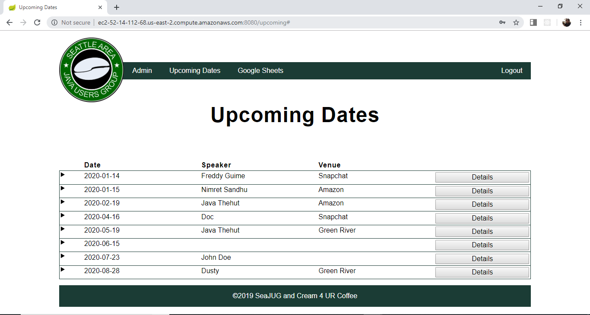
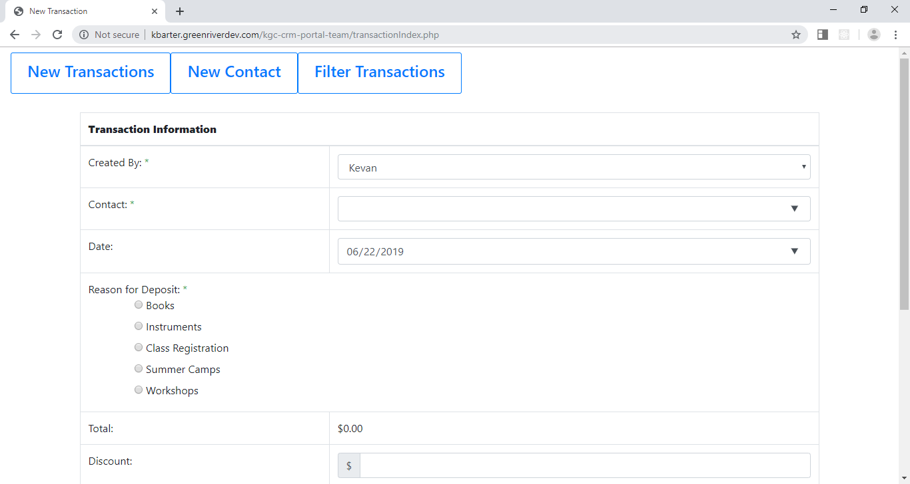
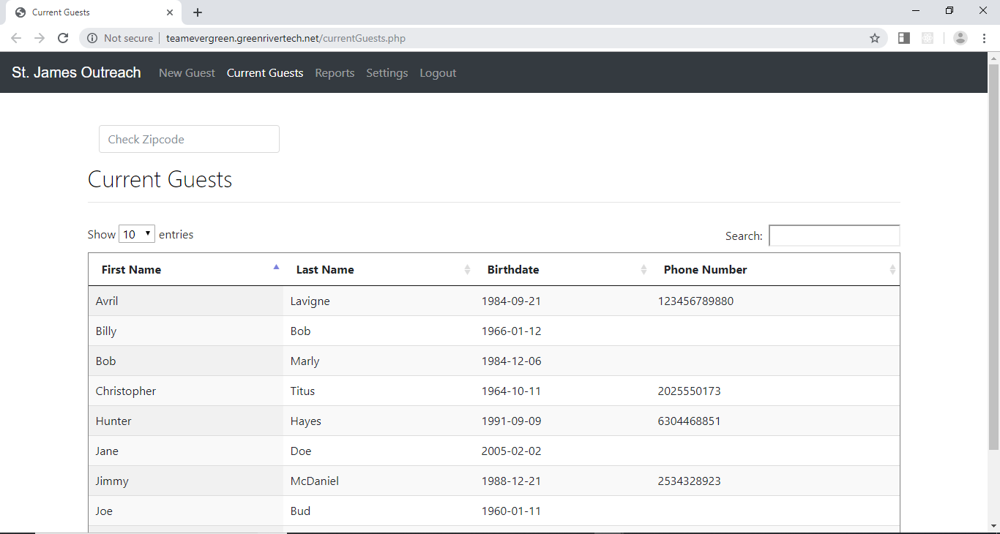

January 2019 - June 2019
Seattle Java Users Group
A six month Senior Capstone project were I worked
in an agile team of four. We worked to create a
website for the a tech meetup group SeaJug so they
could better schdule venues, speakers, food sponsors,
and after events. I helped to implement front end design,
backend design, writing unit tests, and implementing
the Google OAuth login system. The picture below links
to the open source github repo.

April 2018 - June 2018
Khalsa Gurmat Center

A three month Project were I worked on an agile team of 4 for
the Khalsa Gurmat Center. We were tasked with helping to build
a CRM add on to the existing site that helped better keep track of
customers and their transactions that was previously done on paper.
I helped with SQL data base design, frontend/backend validation,
and setting up the front end ui.
September 2017 - December 2017
St James Outreach

Worked on an agile team of four for the non profit
group St James Outreach. We worked to help transition
the non profit group from a paper based system to a
web based system. I helped to implement backend design,
front end design, and validation.